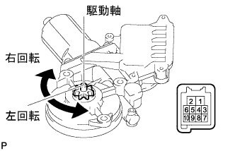
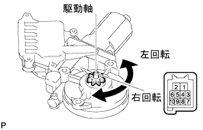

Power Window Regulator Motor Assembly (Driver Side, Rear LH) Operation Inspection
- ■ NOTICE ■
- Do not apply voltage to any terminals other than terminal 2 of the motor, as the pulse sensor inside the motor will be damaged.
- After installing the power window regulator motor and regulator assembly to the door and completing reassembly of the door, be sure to perform the power window regulator motor registration setting (pulse sensor reset). (see
 )
)
Apply voltage to each terminal of the power window regulator motor assembly (driver side, rear LH) connector, and check that the power window regulator motor assembly (driver side, rear LH) operates smoothly.
- Specified Condition
Terminal Name Operating Direction Battery positive - Terminal 2
Battery negative - Terminals 1, 7Rotates clockwise relative to drive shaft Battery positive - Terminal 2
Battery negative - Terminals 1, 10Rotates counterclockwise relative to drive shaft
 |
Power Window Regulator Motor Assembly (Front Passenger Side, Rear RH) Operation Inspection
- ■ NOTICE ■
- Do not apply voltage to any terminals other than terminal 2 of the motor, as the pulse sensor inside the motor will be damaged.
- After installing the power window regulator motor and regulator assembly to the door and completing reassembly of the door, be sure to perform the power window regulator motor registration setting (pulse sensor reset). (see)
Apply voltage to each terminal of the power window regulator motor assembly (front passenger side, rear RH) connector, and check that the power window regulator motor assembly (front passenger side, rear RH) operates smoothly.
- Specified Condition
Terminal Name Operating Direction Battery positive - Terminal 2
Battery negative - Terminals 1, 7Rotates counterclockwise relative to drive shaft Battery positive - Terminal 2
Battery negative - Terminals 1, 10Rotates clockwise relative to drive shaft
 |